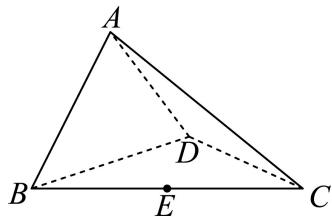

填空题
按本区原卷题号顺序排列。
宝山 · 第1题 ★☆☆☆☆ · 教师预估
i是虚数单位，则|1 + i| =
宝山 · 第2题 ★☆☆☆☆ · 教师预估
已知集合 A={1,2},B={2,4} ，则A ∪ B =
宝山 · 第3题 ★☆☆☆☆ · 教师预估
抛物线x2 = 4y的准线方程是
宝山 · 第4题 ★☆☆☆☆ · 教师预估
已知函数 :f(x)={x2+2 , x<1,f(x−2) , x≥1 则f (4)=
宝山 · 第5题 ★☆☆☆☆ · 教师预估
若函数 f˙(x)=(m−1)x2+3x+(2−n) 是奇函数，则m+n=
宝山 · 第6题 ★★☆☆☆ · 教师预估
本题资料或解析有待核事项，预览不可作为已审定成品。
(x+x2)f 6 的二项展开式中， x2 项的系数为
宝山 · 第7题 ★★☆☆☆ · 教师预估
本题资料或解析有待核事项，预览不可作为已审定成品。
已知函数 ξ:y=ax+1−loga(x+2)+1(a>0 且 .a=1) )的图像经过定点A，则点A的坐标为
宝山 · 第8题 ★☆☆☆☆ · 教师预估
已知圆柱的底面积为9π，侧面积为18π，则该圆柱的体积为
宝山 · 第9题 ★★☆☆☆ · 教师预估
已知 △ABC 中， AB=AC=4,∠BAC=32π ，点D在线段BC上，且 S△ACD=2S△ABD ，则AB⋅AD 的值为
宝山 · 第10题 ★★★☆☆ · 教师预估
有3件商品的编号分别为 i(i=1,2,3) ，它们的售价（元） S(i)∈{5,7,8,10,11,20} ，且满足S(1)≤S(2)≤S(3) ，则这3件商品售价的所有可能情况有 种.
宝山 · 第11题 ★★★☆☆ · 教师预估
本题资料或解析有待核事项，预览不可作为已审定成品。
某分公司经销一产品，每件产品的成本为5元，且每件产品需向总公司交2元的管理费，预计每件产品的售价为x元 (8≤x≤11) 时，一年的销售量为（12−x）2万件，则每件产品售价为 元时，该分公司一年的利润达到最大值.（结果精确到1元）
宝山 · 第12题 ★★★★☆ · 教师预估
本题资料或解析有待核事项，预览不可作为已审定成品。
空间中有相互垂直的两条异面直线 l1, l2 ，点A、 B∈l1,C, D∈l2 ，且 AB=4,CD=1 ，若 DA⊥DB ，且 AC=BC+2 ，则二面角 D−AB−C 平面角的余弦值最小为
选择题
按本区原卷题号顺序排列。
宝山 · 第13题 ★☆☆☆☆ · 教师预估
本题资料或解析有待核事项，预览不可作为已审定成品。
已知向量 a=(1,x),b=(3,1) ，若 ∣a∣/∣b ，则x的值为（ ）
A. −3
B. 3
C. −31
D. 31
宝山 · 第14题 ★★☆☆☆ · 教师预估
“a>b”的一个必要非充分条件是（ ）。
A. ln(a−b)>0
B. 2a>2b
C. (21)a−b≤1
D. a3>b3
宝山 · 第15题 ★★★☆☆ · 教师预估
甲、乙两名篮球运动员在8场比赛中的单场得分用茎叶图表示如左下图，茎叶图中甲的得分有部分数据丢失，但甲得分的折线图完好（右下图），则下列结论正确的是（ ）

A. 甲得分的极差小于乙得分的极差
B. 甲得分的第25百分位数大于乙得分的第75百分位数
C. 甲得分的平均数大于乙得分的平均数
D. 甲得分的方差小于乙得分的方差
宝山 · 第16题 ★★★★☆ · 教师预估
本题资料或解析有待核事项，预览不可作为已审定成品。
若对任意正整数n，数列 {an} 的前n项和 Sn 都是完全平方数，则称数列 {an} 为“完全平方数列”.有如下两个命题：①若数列 {bn} 的前n项和 Tn=(n−t)2 ，（ 为正整数），则使得数列 {∣bn∣} 为“完全平方数列”的t值有且仅有一个；②存在无穷多个“完全平方数列”的等差数列. 则下列选项中正确的是
（ ）
A. ①是真命题， ②是真命题；
B. ①是真命题， ②是假命题；
C. ①是假命题， ②是真命题；
D. ①是假命题， ②是假命题.
解答题
按本区原卷题号顺序排列。
宝山 · 第17题 ★★★☆☆ · 教师预估
本题资料或解析有待核事项，预览不可作为已审定成品。
如图，在四面体 ABCD 中， △BCD 是边长为2的正三角形，且 AB=AD=2.

(1) (6分)证明： BD⊥AC;
(2) (8分)若E是BC的中点，且二面角 A−BD−( C的大小为 2π ，求AE与平面BCD所成角的大小.
宝山 · 第18题 ★★★☆☆ · 教师预估
已知函数 f(x)=ax ，（a > 0且 .a=1)
(1) (6分)若 f(2)=4. ，求方程 f(x)−f(−x)=2 的解；
(2) (8分)已知0 <a<1 ，若关于x的不等式 [f(mx)]2≥f(x2+1)⋅f(x+3) 在区间[1, 2]上恒成立，求实数m的最大值.
宝山 · 第19题 ★★★★☆ · 教师预估
本题资料或解析有待核事项，预览不可作为已审定成品。
某游乐园的活动项目共有三类，分别是“过山车”等10个体验类项目、“海豚之舞”等4个表演类项目、“智力闯关”等3个互动类项目.因设备维护需要，项目并非每日都全部开放.以下数据是项目开放的数量x（个）和游客平均等待时间y（分钟/个）的关系：
| 类别 |
体验类 |
体验类 |
体验类 |
体验类 |
体验类 |
演出类 |
演出类 |
互动类 |
互动类 |
| 开放数量 x |
4 |
5 |
6 |
7 |
8 |
2 |
4 |
2 |
3 |
| 平均等待时间 y |
76 |
73 |
67 |
m |
60 |
53 |
30 |
46 |
30 |
(1) (4分)体验类项目中，若y关于x的回归方程为 y=−4.3x+93.8 ，请计算m的值，并依据该模型预测所有体验类项目均开放时的平均等待时间（精确到整数）；
(2) (4分)小王游玩当日，体验类、演出类、互动类项目分别开放了8个、4个、3个，他计划随机游玩其中的3个项目，已知他选择的项目中至少包含1个互动类项目，求他的等待总时间恰为120分钟的概率；
(3) (6分)为提高游客的参与度，园方在互动类项目“智力闯关”中设计了两关.通过第一关的游客奖励20个游园币，游客可以选择结束或继续闯关.若继续闯关，则必须完成第二关的所有题目.第二关包含2道相互独立的选择题，每答对1题可再奖励20个游园币，每答错1题则要扣除10个游园币。每个游园币可兑换园区内任意一个项目的1分钟等待时间.小王已通过第一关，假设他在第二关中每道题答对的概率均为p，为了获得更多项目等待时间的兑换奖励，小王是否应该继续闯关？请你帮他做出决策.
宝山 · 第20题 ★★★★☆ · 教师预估
本题资料或解析有待核事项，预览不可作为已审定成品。

已知双曲线 C:x2−3y2=1,F1 、 F2 分别是其左、右焦点，直线l与双曲线C的右支交于A、B两点.
(1) (4分)当直线l过点 F2 ，且 ∣AB∣=6H ，求 △ABF1 的周长；
(2) (6分)已知点N (−2, 3)，若直线AN、BN的斜率之和为0，且 tan∠ANB=34 ，当AN、BN分别与y轴交于点R、S时，求 △RSN 的面积；
(3) (8分)已知直线l过点F2，P是双曲线C上一点且位于第一象限，且满足− F2 OQ=2OP 的点Q在线段AB上，若 AB=2QF2 ，求点P的坐标.
宝山 · 第21题 ★★★★★ · 教师预估
本题资料或解析有待核事项，预览不可作为已审定成品。
定义在D上的可导函数y = f(x)，集合 A(k,m)={f(x)∣F(xi)=k,xi∈D,i=1,2,⋅⋅⋅,m,m 为正整数 } ， 其 中 F(x)=f(x)+f′(x) 称为f(x)的 自 和函数， xi 称为 y=f(x) 的固着点. 已知f(x)=aex+bx+csinx (a,b,c∈R)
(1) (4分)若a = c = 0, b = 2, D = R， f(x)∈A(1,m) ，求m的值及 y=f(x) 的固着点；
(2) (6分)若a = 0, b = 1, c = 1, D = [s, t](s > 0)，F(x)是f(x)的 自 和函数，且F(x)在D上是严格增函数，求t−s的最大值；
(3) (8分)若b = −1, c = 0, D = (0, +∞)， f(x)∈A(0,1) ，且t是y = f(x)的固着点，求a的取值范 围，并证明： 2a1<et<a21